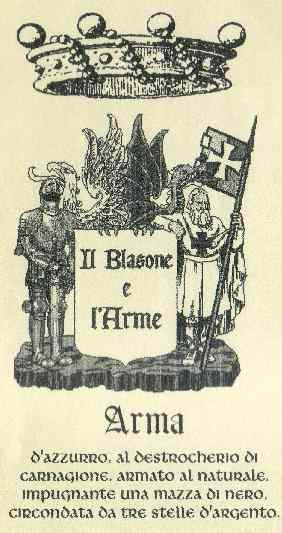

CIANCIOLA
BARONI
Originaria della cittá di piazza, e trasferita in messina circa al 1610, francesco compró nel 1612 la baronia della terza dogana di catania, e ne fu investito nel susseguente anno per sé e suoi eredi. Fu inoltre signora della baronia di scarpello. Dice il galluppi nelle sue opere: stato presente della nobiltá messinese (1881). Stampato in milano dal bernardoni nel 1881; l´armerista italiano stampato in milano nel 1872, della quale riferisce el galluppi di antica e chiara nobiltá. I cognomi antichi in qualunque modo conservati rendono decoro non solo alle famigliema anche alle cittá, che peró credo, che questa fosse unaq di quelle cause, per le quali i romano vollero, che i suo cittadini avessero pero figliuoli, se non veri, adottivi, pare molto riguardevoli i soggeti viventi di quella familia che con tanto decoro sostentano questo cosí antico e nobili cognome che ha avuto uomini di consiglio, e altri soggetti illustri. El filo genealógico rigorosamente documentato di questa illustre ed antichissima familia. La quale originaria della Sicilia fa rimontare la sua origine a un personaggio la quale resulta in documenti storici dell´epoca, custoditi negli annali e archivi della medesima cittá di, ove ella dimorava come riporta il Filiberto o altri sotrici scrittori e ricercatori.
Fuente de la información: WAPPEN (Empresa que vende información sobre títulos nobiliarios en Internet).
Información suministrada por Fernando Cianciola Eula
 A continuación, insertamos la traducción del texto en Castellano, colaboración de Argentino Florencio Casartelli Cianciola.
A continuación, insertamos la traducción del texto en Castellano, colaboración de Argentino Florencio Casartelli Cianciola.
Cianciola BARONES
Originaria de la ciudad de Piazza, se trasladó a Messina hacia 1610. Francisco compró en 1612 la baronía de la tercera aduana de Catania, y fue investido en el año siguiente para él y sus herederos. Fue asimismo poseedora de la baronía de Scarpello. Galluppi dice en su obra: “El estado actual de la nobleza mesinese” (1881). Impreso en Milán por Bernardoni en 1881; el armerista italiano impreso en Milán en 1872, a la que se refiere Galluppi de antigua y clara nobleza. Los antiguos apellidos de alguna manera conservados dan decoro, no sólo a las familias sino también la ciudad, pero creo que ésta fue una de las causas, para la que los romanos querían, que sus ciudadanos tuviesen hijos, si no naturales, adoptados, de manera de resguardar a las personas que viven en la familia y con ese decoro, sostener ese tan antiguo como noble apellido, que ha tenido hombres de cultura y de otras personas distinguidas. El hilo genealógico rigurosamente documentado de esta familia ilustre y antigua, la cual es originaria de Sicilia, le hace remontar su origen a un personaje que aparece en los documentos históricos de la época, custodiados en los registros y archivos de la misma ciudad, donde vivió como lo informa Filiberto u otros escritores e investigadores de bibliotecas históricas.
Fuente de la información: WAPPEN (Empresa Que vende Información Sobre Títulos nobiliarios en Internet).
Información Suministrada Por Fernando Cianciola Eula
Mesina (Missina en siciliano, Messina en italiano, Micina en el castellano del siglo XVI) es una ciudad de 245.159 habitantes, situada en el ángulo nordeste de Sicilia a unos 90 km de Catania y unos 230 km de Palermo. Además, se ubica enfrente de Regio de Calabria, junto al mar y al homónimo Estrecho de Mesina
